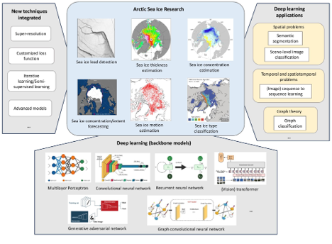
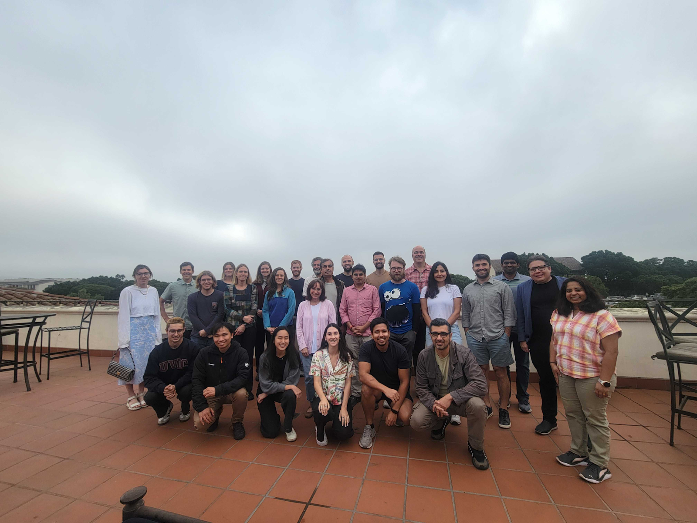

Home
People
Core Project Team
Project Collaborators
Advisory Board
News
Webinars
Workshop
CFP2025
News
Order By
Default
Title
Date - Oldest
Date - Newest
Author
Announcing the 2025 Workshop: Scaling Impact in AI/ML Education for Arctic Research
We are excited to announce the upcoming second
“Scaling Impact: Co-Creating a Shared Framework for Teaching AI and Machine Learning with Applications in Arctic Research”
work…
Jun 2, 2025

New review paper on AI in Arctic Sea Ice Remote Sensing!
As AI continues to advance climate science, a recent paper from the Cyber2A team explores its unique contributions to Arctic sea ice remote sensing. The study reviewed over…
Oct 30, 2024
Wenwen Li

Arctic researchers dive into AI and ML for transformative science in the first Cyber2A workshop
Last week, 20 Arctic researchers gathered in Santa Barbara, CA for the first NSF Cyber2A workshop to learn more about incorporating artificial intelligence (AI) and machine…
Oct 29, 2024
Nicole Greco
Google.org’s new grant to help track permafrost thaw
Today we’re announcing a $5 million grant and Google.org Fellowship to Woodwell Climate Research Center to help them deploy satellite imagery and AI technology to track…
Aug 10, 2023
Brigitte Hoyer Gosselink
The multi-institution project received $5M in funding from Google.org to better understand Arctic permafrost thaw
As the Arctic warms at nearly four times the global rate, permafrost – frozen ground that has remained below 0 degrees Celsius for at least two consecutive years – is…
Aug 10, 2023
David Rozul
ASU AI project analyzes big data to help analysts find solutions to Arctic warming
The Arctic is facing a climate crisis that’s threatening the region, its people and the rest of the world. And while solutions to this crisis are available, like many parts…
May 7, 2023
Dolores Tropiano
Winners announced for the 1st GeoAI Martian Challenge!
The 2022 GeoAI Martian Challenge is the very first in the series of GeoAI challenges hosted by the Cyberinfrastructure and Computational Intelligence Lab (CICI) and the…
May 1, 2023
Wenwen Li
No matching items